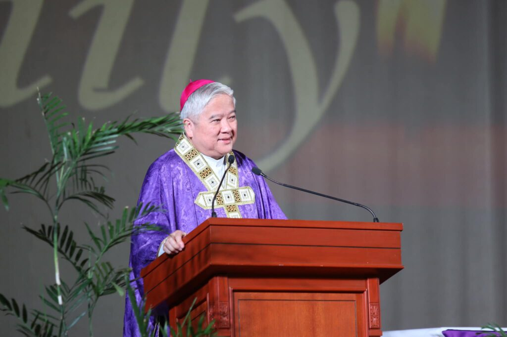
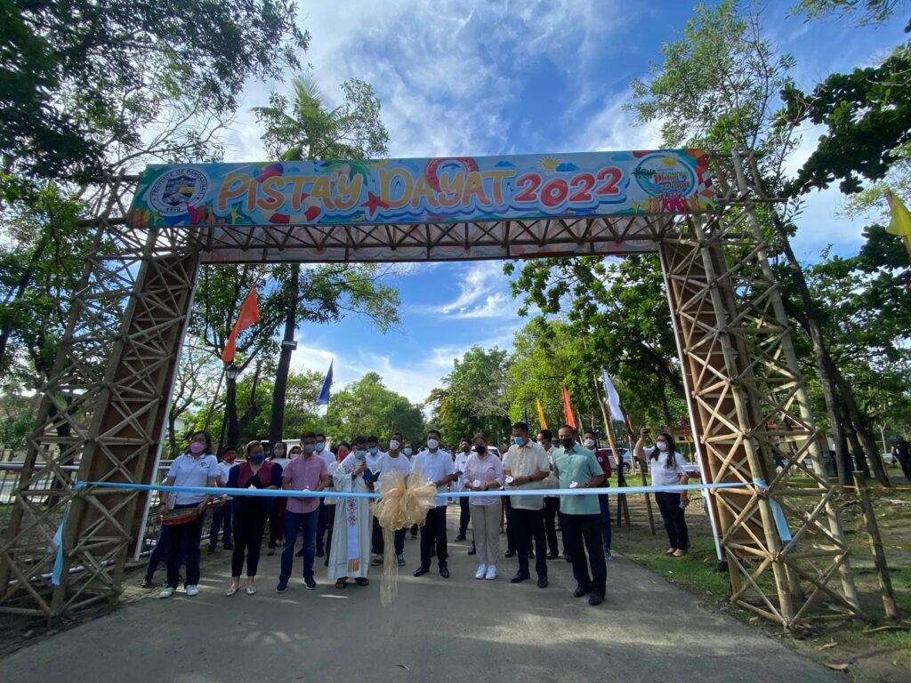
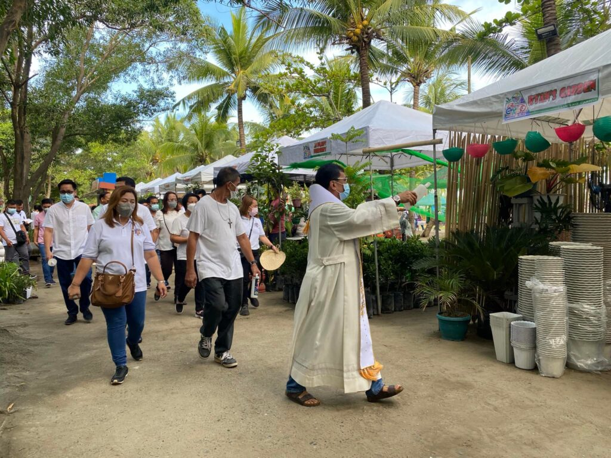
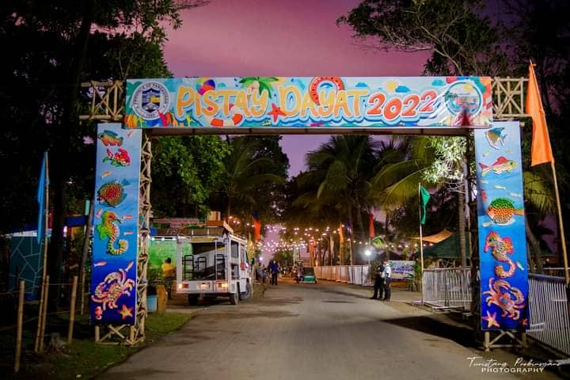
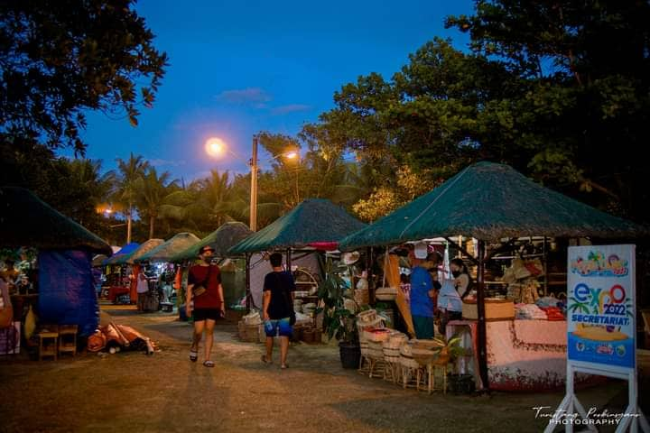
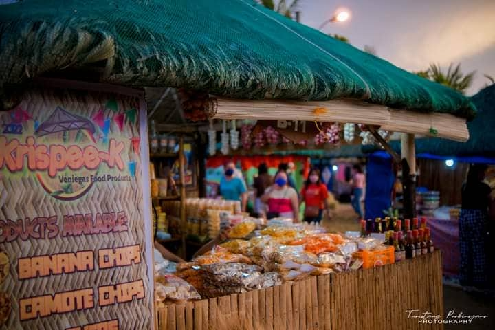
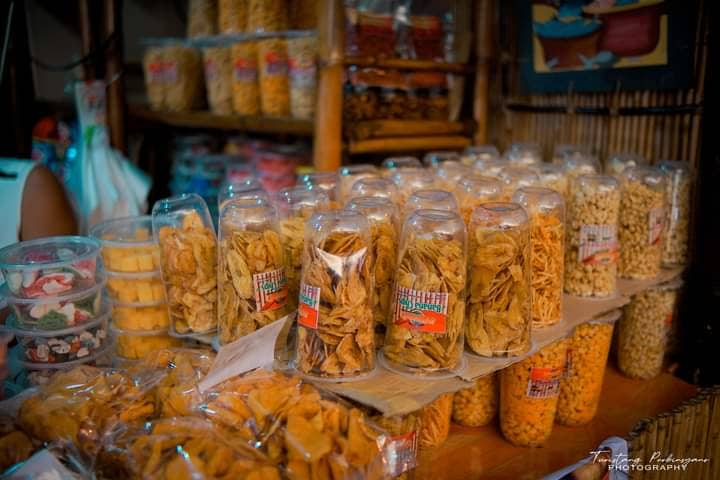
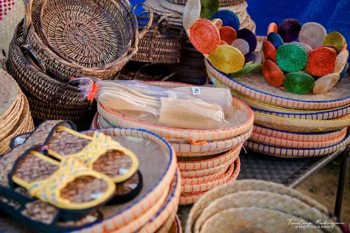
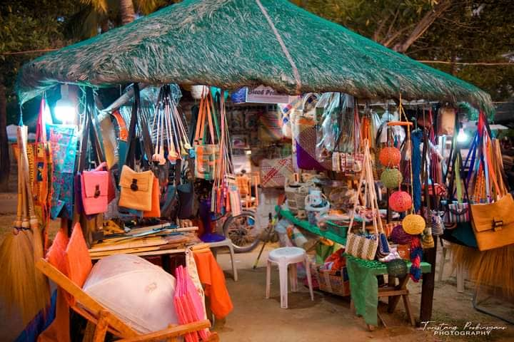

Expo lingayen expo
Pangasinan Celebrates 442nd Agew na Pangasinan and Opens the 13th Pangasinan Tourism and Trade Expo
LINGAYEN, Philippines - The Provincial Government of Pangasinan, led by Governor Amado "Pogi" I. Espino III, celebrated the 442nd founding anniversary of the province of Pangasinan and officially opened the 13th Pangasinan Tourism and Trade Expo at the Capitol Beachfront on April 5, 2022.
With the word "asin" at the heart of its name, the province of Pangasinan is known to be one of the top producers of salt in the Philippines. This significant commodity embodies the identity of Pangasinan and Pangasinenses as Archbishop Socrates B. Villegas of the Archdiocese of Lingayen-Dagupan emphasized in his homily during the Misa na Pisasalamat held at the historical Sison Auditorium in Lingayen.
"Our forefathers preserved Pangasinan by the salt of sacrifices," Archbishop Villegas shared. "Salt is a component of contracts, of promises, and of word of honor. Our forefathers exchanged salt in agreement. This is because salt is constant. Salt does not change.

"Let us preserve what we have received from our forefathers, be responsible for future generations, add flavor to our tasteless and bland lives, and to stand and honor our word," Archbishop Villegas imparted to the guests present at the Sison Auditorium as he ended his homily.
After the Misa na Pisasalamat, Governor Espino was joined by Lingayen Mayor Leopoldo N. Bataoil, Board Members of the Sangguniang Panlalawigan, Provincial Government department heads and employees, and local tourism officers as they took part in a parade led by the University of Luzon Drum and Bugle Corps en route to the Capitol Beachfront where Fr. Yannix Liguid blessed the grounds of the 13th Pangasinan Tourism and Trade Expo.


LINGAYEN EXPO- The provincial government is assisting the micro, small and medium enterprises (MSMEs) to recover from their losses brought on by the pandemic through the Tourism and Trade Expo. said participating MSMEs were permitted to establish their stalls for free.


Various Pangasinan products were displayed and were sold at affordable prices.
Among these products are banana chips, Guitar, tapa, chips, puto (steamed rice cake), dried fish, plants, handicrafts such as baskets, slippers, bags and others pangasinan's own products




The Tourism and Trade Expo features various Pangasinan brand products, arts and crafts, tourism related establishments/services, One-Town, One Product (OTOP) of Local Government Units in the province among others.
Tourism and Trade Expo is also part of the province's month-long celebration of Pistay Dayat (Sea Festival) and will run until May 1.